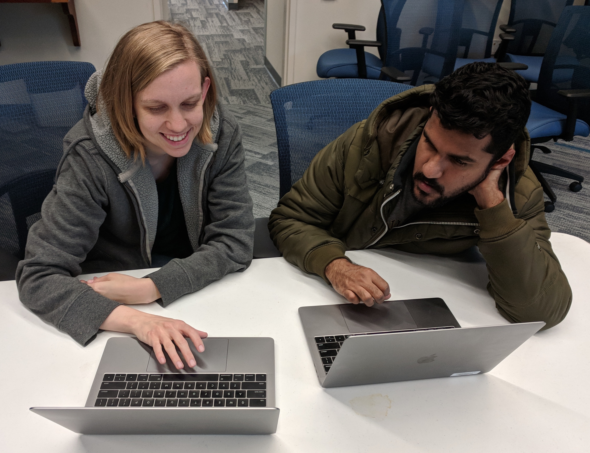

The Caltech LIGO data analysis group
Jess is currently a member of the Caltech LIGO Laboratory Astrophysics Group, led by Alan Weinstein. Our group works on a broad array of projects, including searching LIGO and Virgo data for gravitational wave signals, characterizing the LIGO detectors, calibrating LIGO data, investigating noise sources, tests of general relativity, and much more.
The LIGO Detector Characterization Group
Jess co-chairs the LIGO Detector Characterization group or 'DetChar' group along with Andy Lundgren, a senior lecturer at Portsmouth University, in the U.K. The detector characterization group operates at the nexus between LIGO detector instrumentation and the astrophysical analysis. DetChar is responsible for identifying and mitigating sources of noise that reduce the significance of true gravitational wave signals or could bias accurate estimation of source properties, as well as vetting signal candidates.
The LIGO DetChar group currently consists of roughly 100 researchers from 35 institutions around the world, ranging from undergraduate students to senior professors.

Jeff Bidler, a student a CSU Fullerton, examines a digital video camera mount to investigate a potential noise coupling at LIGO-Hanford.

The LIGO Detector Characterization Group at LIGO-Livingston.
The LIGO Detector Characterization Group at LIGO-Hanford.
Noise sprint teams at LIGO-Livingston.
Philippe Nguyen (Oregon), Derek Davis (Syracuse) and Sumeet Kulkarni (Mississippi) investigating a noise coupling.

Marissa Walker, a postdoc at CSU Fullerton, and Sidd Soni, a graduate student at LSU discuss a project.
Alex Macedo (CSU Fullerton), Oli Patane (CSU Fullerton), Philippe Nguyen (Oregon), and Derek Davis (Syracuse).
Derek Davis (Syracuse), Sumeet Kulkarni (Mississippi), and Philippe Nguyen (Oregon) discussing their noise sprint project.
Former students and mentees
High school student mentees
- Jackson Henry, now a student at the Rochester Institute of Technology
Undergraduate student mentees
- Sarah Zuraw, now a graduate student at the University of Massachusetts Amherst
- Kalina Nedkova, now a graduate student at Tufts University
- Michael Antia, LIGO SURF fellow 2016, Victor M. Blanco Fellow
- Rachel Brodsky, LIGO SURF fellow 2017
- Jomardee Perkins, recent graduate of the University of Washington Bothell
Graduate student mentees
- Marissa Walker, now a postdoc at Cal State Fullerton
- Thomas Abbott, graduate student at Louisiana State University
- Derek Davis, graduate student at Syracuse University
- Alex Urban, now a computational research scientist at Louisiana State University
- Erika Cowan, graduate student at Georgia Tech
- Guillermo Valdes, now a postdoc at Louisiana State University
Researcher mentees within the LIGO Detector Characterization group
- Karelle Siellez, now a postdoc at UC Santa Cruz
- Paul Altin, researcher at Australia National University
- Amber Stuver, now faculty at Villanova University
- Beverly Berger, Stanford University
- John Oh, KIST
- SangHoon Oh, KIST